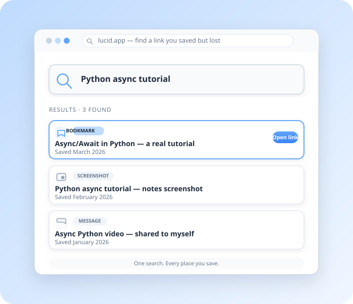
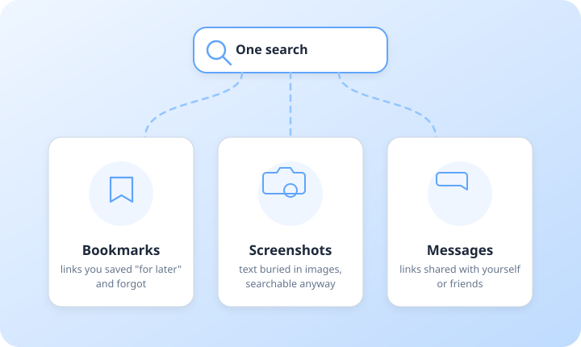

Private by design
Everything stays on your device. No accounts built on your data, no ads — just your stuff, kept to yourself.
Bookmarks, screenshots, and links you shared with yourself — Lucid finds what you lost, no matter which app it's buried in.
Join the waitlist
"I know I saved it somewhere..." — a bookmark here, a screenshot there, a link you messaged yourself. Your saved things are scattered across five apps.
So a 30-second search turns into 30 minutes of clicking through history, folders, and chats. Sometimes you give up — and search the same thing all over again.
Type what you remember — a topic, a word, a name. Lucid searches across the places you actually save and brings back what you lost.
Your data stays on your device. No ads. No selling your history. Just your stuff, quietly organized.
Four simple steps from "I saved it" to "found it".
Bookmark, screenshot, or send yourself links across your apps and devices.
Lose track of where you saved something — a tutorial, a reference, an important link.
Type what you remember into Lucid's one search box — a topic, a word, a name.
Lucid searches across your bookmarks, screenshots, and messages, and brings back what you lost.
Lucid brings together links and resources you saved across bookmarks, screenshots, and shares — so you never dig through each app separately.

All the links you saved "for later" — found again in seconds.
Text buried inside screenshots — searchable like normal links.
Links you shared with yourself or friends — pulled out of old chats.
Realistic result cards showing title, source, saved date, and a link.
Async/Await in Python — a real tutorial
Python async tutorial (screenshot of notes)
Async Python video — shared to myself
If you juggle assignments, tutorials, documentation, and project resources, Lucid keeps them one search away.
Three quiet promises. Nothing more, nothing loud.
Everything stays on your device. No accounts built on your data, no ads — just your stuff, kept to yourself.
Links from bookmarks, screenshots, and messages — searchable from one calm box instead of five scattered apps.
Finds what you remember in seconds — not 30 minutes of clicking through history and folders.
I built Lucid because I lose links constantly — a tutorial I bookmarked, a screenshot of an error, a link I sent myself at midnight. I wanted one calm place to find all of it again. If that sounds like you, you're exactly who Lucid is for.
Yes. Your data stays on your device. No ads, and your personal data is never sold.
Links and resources you saved as bookmarks, screenshots, and messages — all in one search.
Lucid is in development. Join the waitlist and you'll be first to know when it launches.
Pricing isn't announced yet. Join the waitlist to hear the news as soon as it's ready.
Lucid is coming. Join the waitlist and be first to know.
Private by design. Your data stays on your device. Your email is stored privately on our server to contact you about the launch.
Built for people who save more than they find.